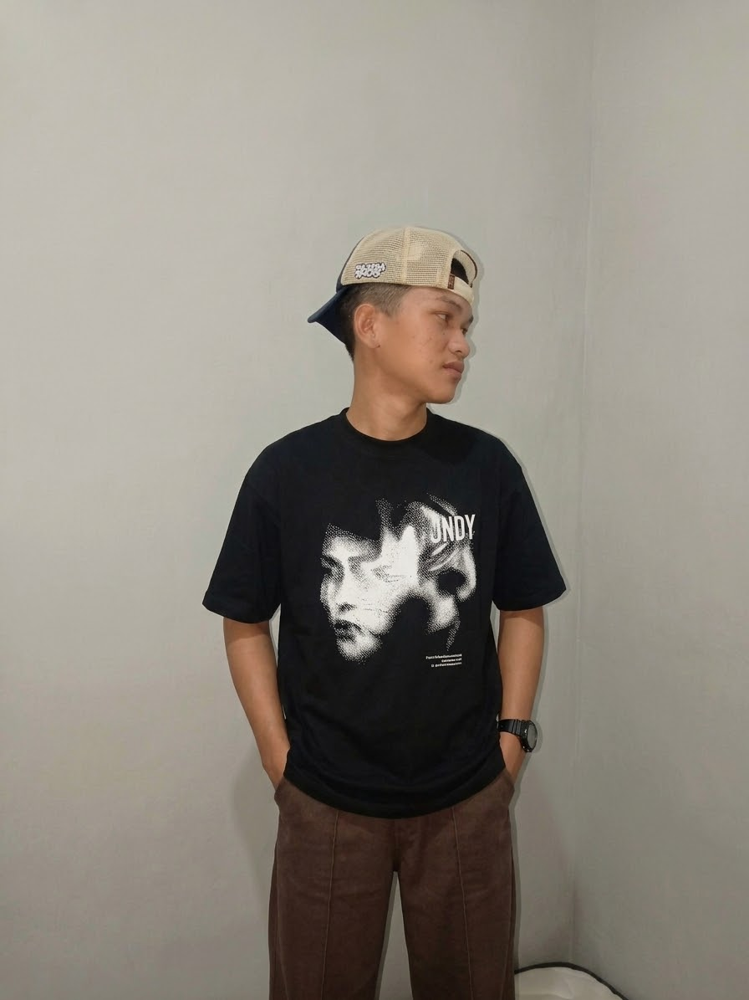
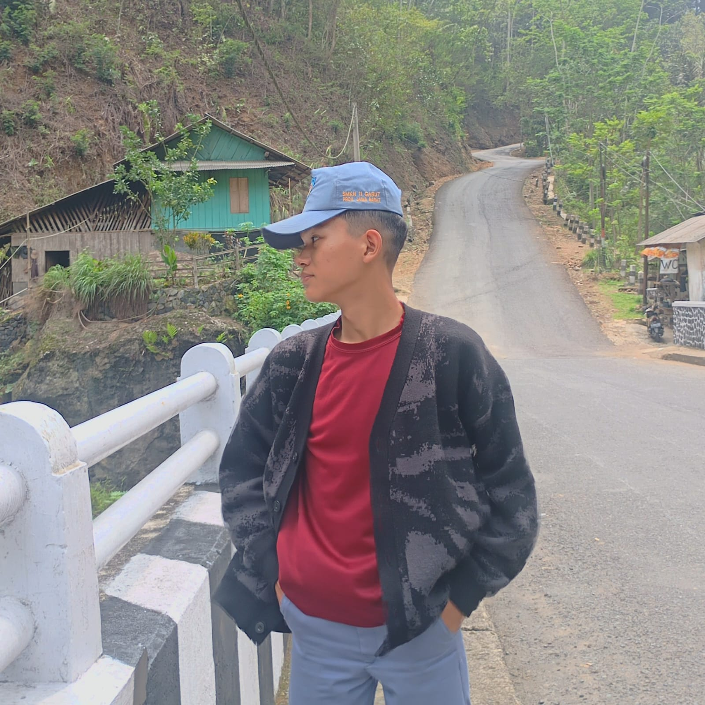

// lab_jaringan_tjkt
Topologi & Subnetting
Status: Dalam Pengembangan
Lab Jaringan Komputer
Eksperimen konfigurasi jaringan lokal, pengalamatan IP, dan simulasi perangkat keras selama pembelajaran TJKT di SMKN 11 Garut.
PORTFOLIO LOADING
Halo! Saya siswa kelas X TJKT di SMKN 11 Garut yang suka mengeksplorasi teknologi, sistem komputer, jaringan, dan pemrograman. Rasa ingin tahu selalu mendorong saya untuk mencoba gagasan baru.

DISCOVER

Hasan Paujan
@zvim · Garut
Saya adalah siswa kelas X TJKT di SMKN 11 Garut yang memiliki ketertarikan besar pada komputer, sistem operasi, jaringan komputer, pemrograman, dan keamanan siber.
Selain teknologi, saya juga tertarik pada fisika dan fenomena ilmiah. Bagi saya, belajar adalah proses berkelanjutan untuk memahami cara kerja sesuatu, menjelajah, dan berkreasi.
NAME
Hasan Paujan
LOCATION
Garut, Jawa Barat, Indonesia
IDENTITY / HANDLE
zvim
EDUCATION
SMKN 11 Garut (Kelas X · TJKT)
hasan.jpn23@gmail.com
LANGUAGES
Indonesia, Sunda, English
LEARNING PATH
SMKN 11 GARUT · KELAS X
Mempelajari dasar-dasar arsitektur perangkat keras komputer, instalasi dan konfigurasi sistem operasi, topologi jaringan lokal, serta pengenalan logika pemrograman.
SELF-TAUGHT & CREATIVE DESIGN
Mengasah kemampuan dasar HTML, CSS, dan Python, memahami prinsip keamanan digital, serta melatih kreativitas melalui desain grafis, poster, dan logo.
SKILLS & TOOLS
Bahasa pemrograman dan fondasi sistem komputer yang sedang saya pelajari dan kembangkan.
HTML5
Dasar
CSS3
Dasar
Python
Pemula
Sistem OS
Eksplorasi
Bidang jaringan komputer, keamanan siber, desain visual, serta perangkat kerja harian saya.
Jaringan
Dasar TJKT
Cyber Security
Pemula
VS Code
Code Editor
Canva & Desain
Poster & Logo
PORTFOLIO
// lab_jaringan_tjkt
Topologi & Subnetting
Status: Dalam Pengembangan
Eksperimen konfigurasi jaringan lokal, pengalamatan IP, dan simulasi perangkat keras selama pembelajaran TJKT di SMKN 11 Garut.
// python_dan_web
Eksperimen Kode Pemula
Status: Dalam Pengembangan
Kumpulan skrip Python sederhana dan latihan antarmuka web menggunakan HTML & CSS yang sedang saya bangun dari nol.
// visual_studio
Poster, Logo & Presentasi
Status: Dalam Pengembangan
Eksplorasi desain poster, pembuatan logo minimalis, dan tata letak presentasi kreatif yang dikerjakan menggunakan Canva.
GET IN TOUCH
Online
Halo! Saya adalah asisten AI Hasan Paujan (zvim). Ada yang bisa saya bantu terkait profil, sekolah di SMKN 11 Garut, keahlian, atau cara menghubungi Hasan?
Baru saja